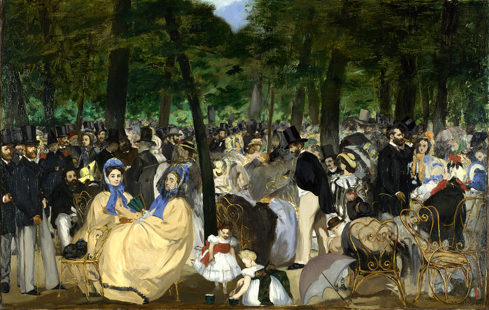

<head>
<meta charset="UTF-8" />
<meta name="keywords" content="drawing, painting" />
<meta name="description" content="drawings by Sunjy" />
<title>Sunjy</title>
<link rel="shortcut icon" type="image/x-icon" href="../../mImages/mCommon/favicon.ico" media="screen" />
<link rel="stylesheet" type="text/css" href="../../mCsses/mCommon/mCssA.css" />
<link rel="stylesheet" type="text/css" href="../../mCsses/mCommon/mCssB.css" />
<link rel="stylesheet" type="text/css" href="../../mCsses/mCommon/mCssC.css" />
<link rel="stylesheet" type="text/css" href="../../mCsses/mCommon/mCssD.css" />
<link rel="stylesheet" type="text/css" href="../../mCsses/mContent/mCssA.css" />
<link rel="stylesheet" type="text/css" href="../../mCsses/mContent/mCssB.css" />
<link rel="stylesheet" type="text/css" href="../../mCsses/mContent/mCssC.css" />
<link rel="stylesheet" type="text/css" href="../../mCsses/mContent/mCssD.css" />
</head>
<script type="text/javascript" src="../../mScripts/mContent/mContentAA.js" /></script>
<script type="text/javascript" src="../../mScripts/mContent/mContentAB.js" /></script>
<script type="text/javascript" src="../../mScripts/mContent/mContentAC.js" /></script>
<script type="text/javascript" src="../../mScripts/mContent/mContentAD.js" /></script>
<script type="text/javascript"></script> 
<script type="text/javascript">
document.write('<div class="mImgAbsolute"></div>');
/*
document.write('<p class="mFontSizeBColor" />From a white paper...</p>');
document.write('<table class="center"><tr><td>');
document.write('');
document.write('</td></tr></table>');
*/
</script>


<script type="text/javascript">
document.write('<p class="mFontSizeBColor" />Music in the Tuileries</p>');
document.write('<p class="mFontSizeSColor" />“Music in the Tuileries” by Édouard Manet depicts the gathering of a fashionable and wealthy crowd that includes many artists and intellectuals that gathered in the Tuileries Gardens to listen to one of the twice-weekly concerts given there.<br><br>Manet has included several of his friends, artists, authors, and musicians who take part, and a self-portrait. He is a participant in the scene but slightly detached from it.<br><br>Manet is the man standing at the far left of the picture holding a cane. His body is cut by the edge of the canvas and partly obscured by the man next to him. For Manet, it was also a group portrait of Manet and his family, friends, and associates.<br><br>No musicians are visible, but the picture title allows the viewer to imagine the music and conversation.<br><br>Some critics regarded the painting as unfinished, but the atmosphere imparts a sense of what the Tuileries Gardens was like at the time. <br><br>When exhibited in 1863 with its lack of polish and its bold brushwork, it infuriated the critics.<br><br>This painting is Manet’s first real attempt at capturing contemporary urban life. The picture has been described as the earliest example of modern art due to its subject matter and technique.<br><br>The colors in the lower areas of the gardens are generally subdued and executed in ochres. The dark green foliage in the upper part contains a glaze of emerald green and green mixed with yellow lake with the small additions of ivory black and yellow ochre.<br><br>The prominent, colorful accents in the bonnets and clothes of the children are painted in almost pure pigments of cobalt blue, vermilion, or chrome orange. The metal chairs in the foreground had just replaced the wooden chairs in the garden in 1862. <br><br>The work is an early example of Manet’s style, inspired by Frans Hals and Diego Velázquez, and it is a prelude of his lifelong interest in portraying the subject of leisure in his art.<br><br>This painting inspired Manet’s contemporaries, such as Monet and Renoir to also paint large groups of people.<br><br>One of the final private owners of this painting was the collector Sir Hugh Lane who purchased it in 1903. After Lane’s death, when the Lusitania was sunk in 1915, an unwitnessed codicil to his will left the painting to the Dublin City Gallery, now known as The Hugh Lane.<br><br>The codicil was found to be invalid, and in 1917 a court case decided that his previous will left the work to the National Gallery in London.<br><br>After intervention from the Irish government, the two galleries reached a compromise in 1959. The Galleries agreed to share the paintings.<br></p>');
document.write('<table class="center" /><tr><td>');
document.write('<br>Manet has included several of his friends, artists, authors, and musicians who take part, and a self-portrait. He is a participant in the scene but slightly detached from it.<br><br>Manet is the man standing at the far left of the picture holding a cane. His body is cut by the edge of the canvas and partly obscured by the man next to him. For Manet, it was also a group portrait of Manet and his family, friends, and associates.<br><br>No musicians are visible, but the picture title allows the viewer to imagine the music and conversation.<br><br>Some critics regarded the painting as unfinished, but the atmosphere imparts a sense of what the Tuileries Gardens was like at the time. <br><br>When exhibited in 1863 with its lack of polish and its bold brushwork, it infuriated the critics.<br><br>This painting is Manet’s first real attempt at capturing contemporary urban life. The picture has been described as the earliest example of modern art due to its subject matter and technique.<br><br>The colors in the lower areas of the gardens are generally subdued and executed in ochres. The dark green foliage in the upper part contains a glaze of emerald green and green mixed with yellow lake with the small additions of ivory black and yellow ochre.<br><br>The prominent, colorful accents in the bonnets and clothes of the children are painted in almost pure pigments of cobalt blue, vermilion, or chrome orange. The metal chairs in the foreground had just replaced the wooden chairs in the garden in 1862. <br><br>The work is an early example of Manet’s style, inspired by Frans Hals and Diego Velázquez, and it is a prelude of his lifelong interest in portraying the subject of leisure in his art.<br><br>This painting inspired Manet’s contemporaries, such as Monet and Renoir to also paint large groups of people.<br><br>One of the final private owners of this painting was the collector Sir Hugh Lane who purchased it in 1903. After Lane’s death, when the Lusitania was sunk in 1915, an unwitnessed codicil to his will left the painting to the Dublin City Gallery, now known as The Hugh Lane.<br><br>The codicil was found to be invalid, and in 1917 a court case decided that his previous will left the work to the National Gallery in London.<br><br>After intervention from the Irish government, the two galleries reached a compromise in 1959. The Galleries agreed to share the paintings.<br>" />');
document.write('</td></tr></table>');
</script>


